Subtheme: Zoning and Housing Supply
Overall Analysis Questions
- What are the geographical patterns of zoning?
- Do municipalities with higher household income have stricter zoning laws?
- Is there any correlation between zoning laws and municipal demographics?
Discoveries & Insights
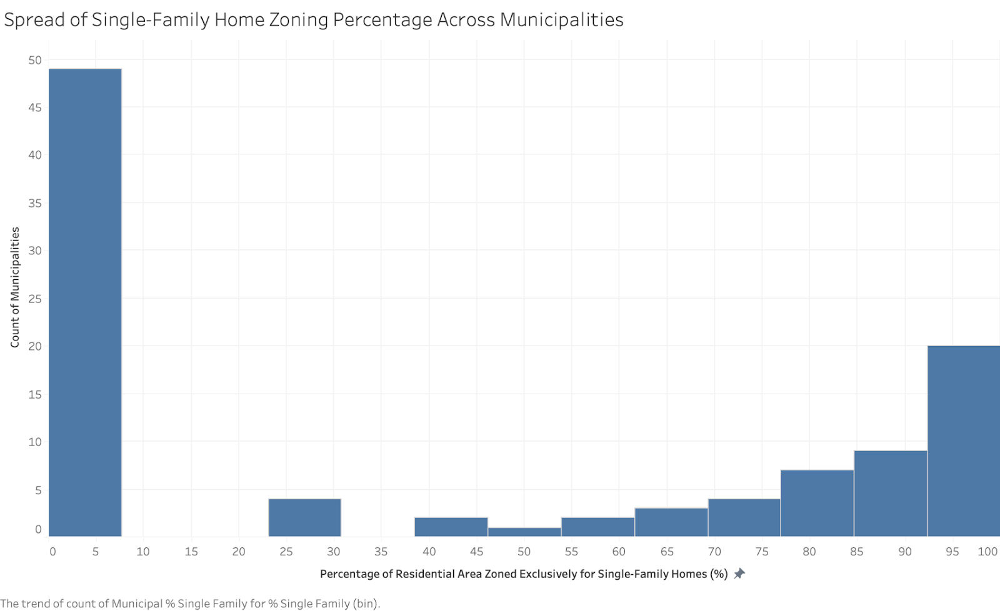
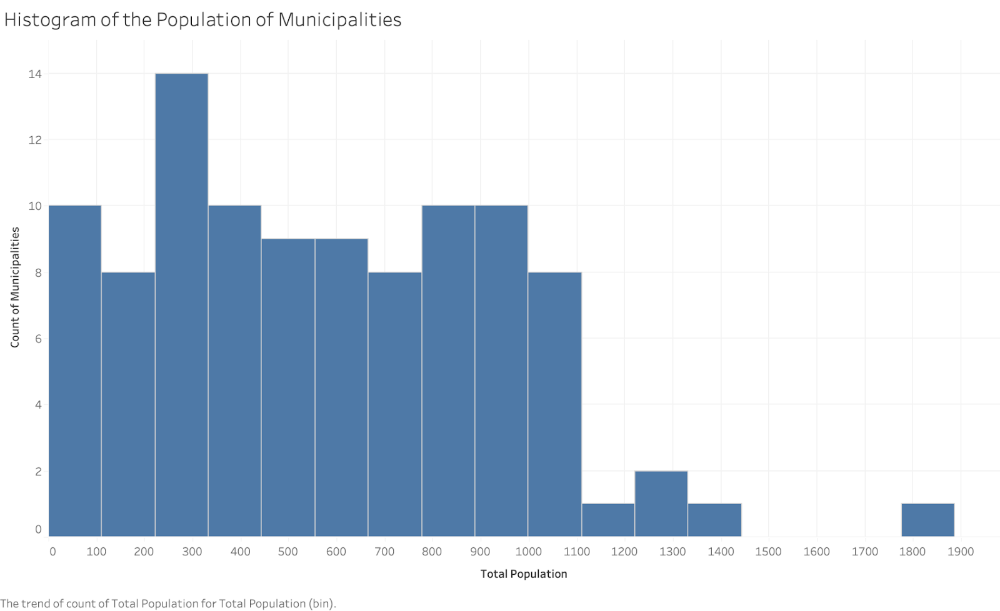
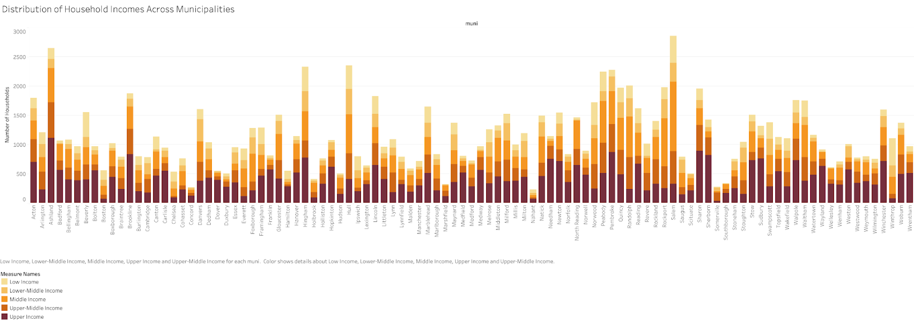
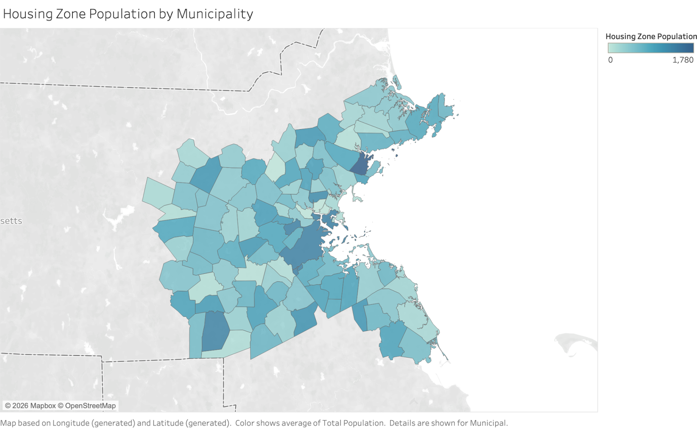
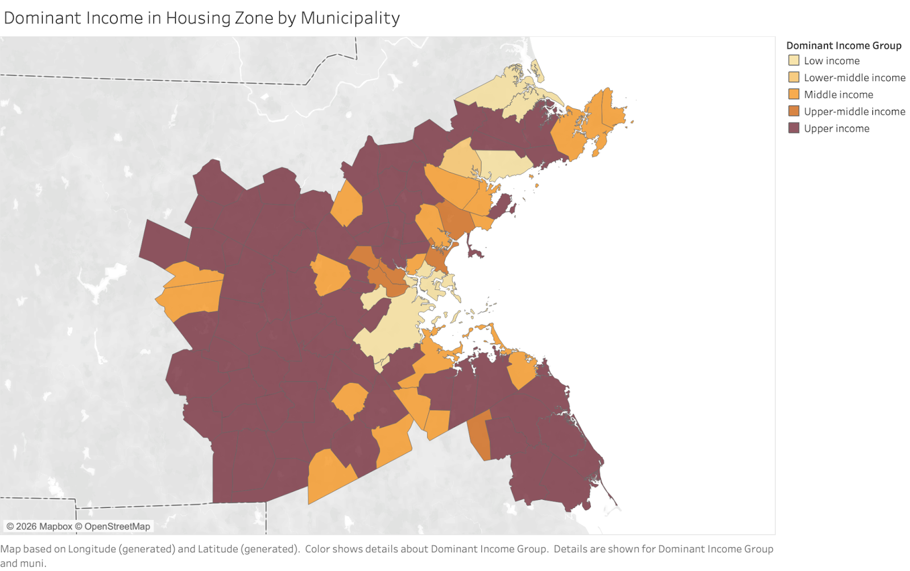
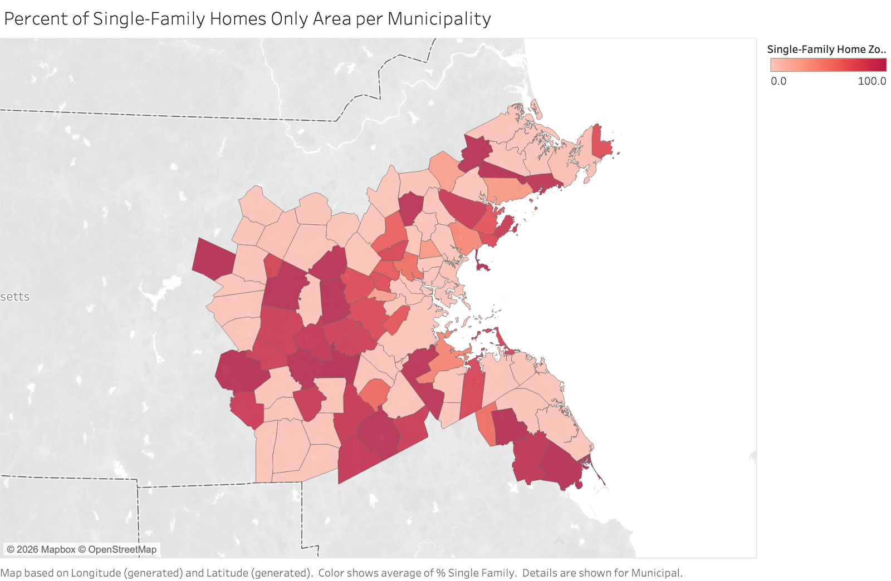
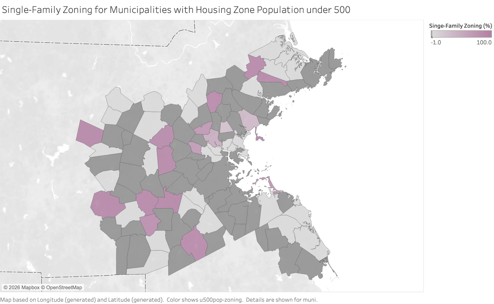
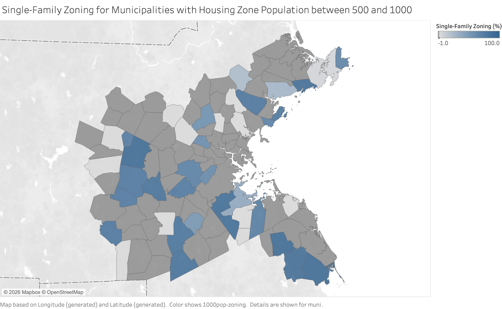
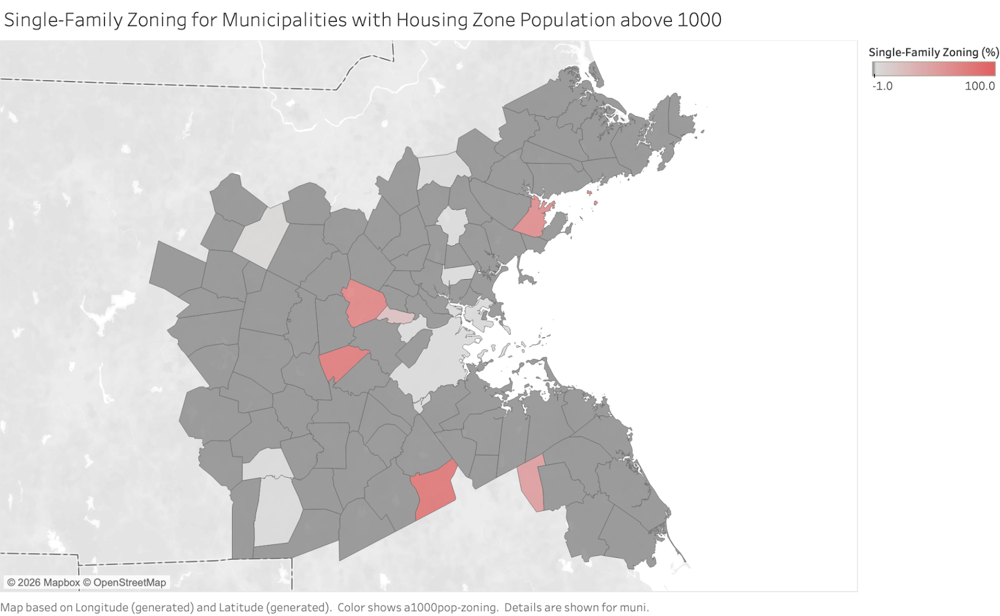
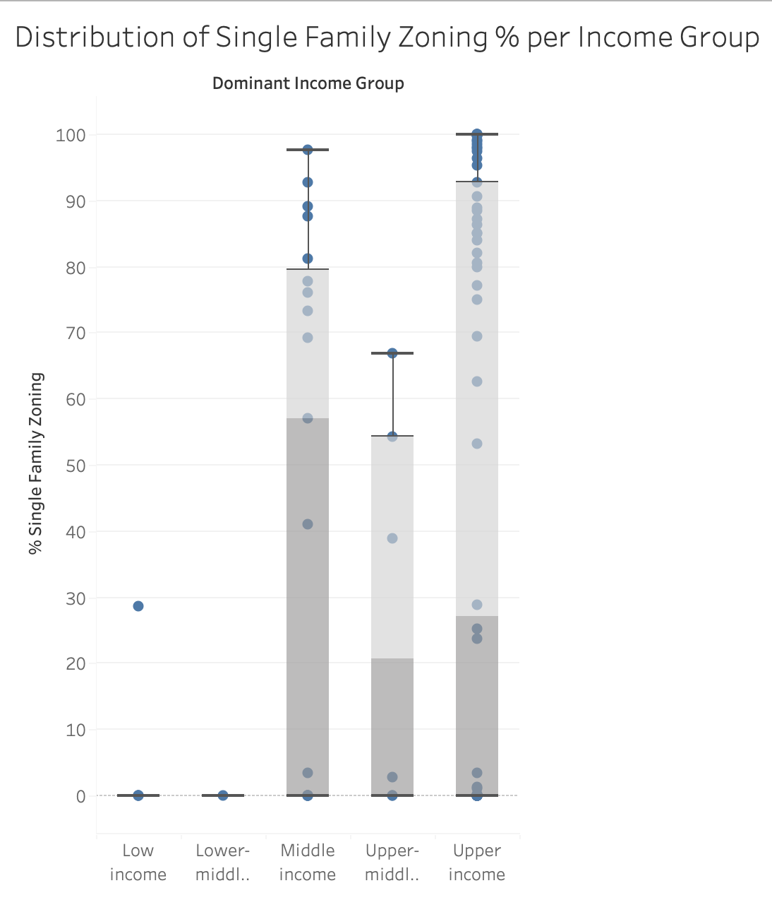
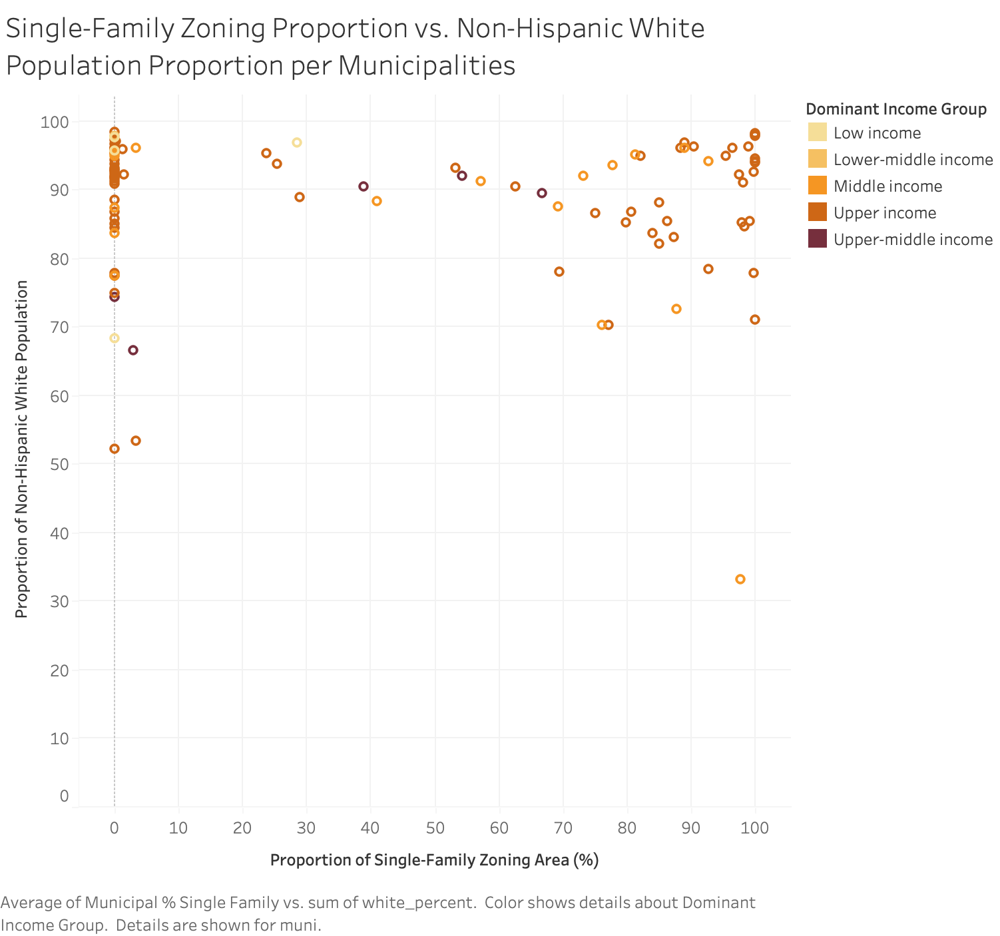
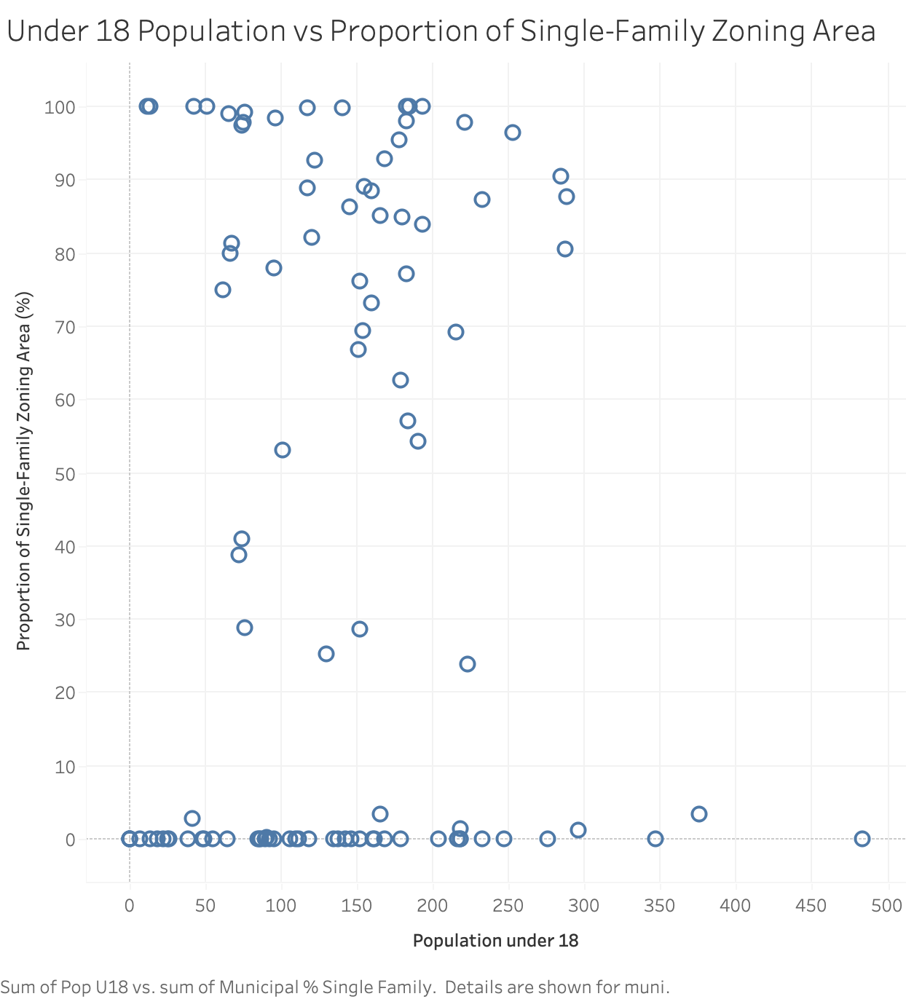
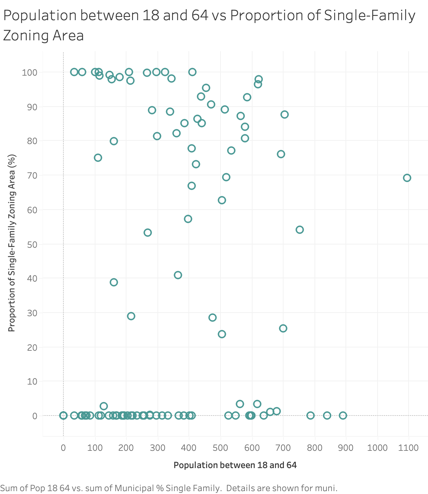
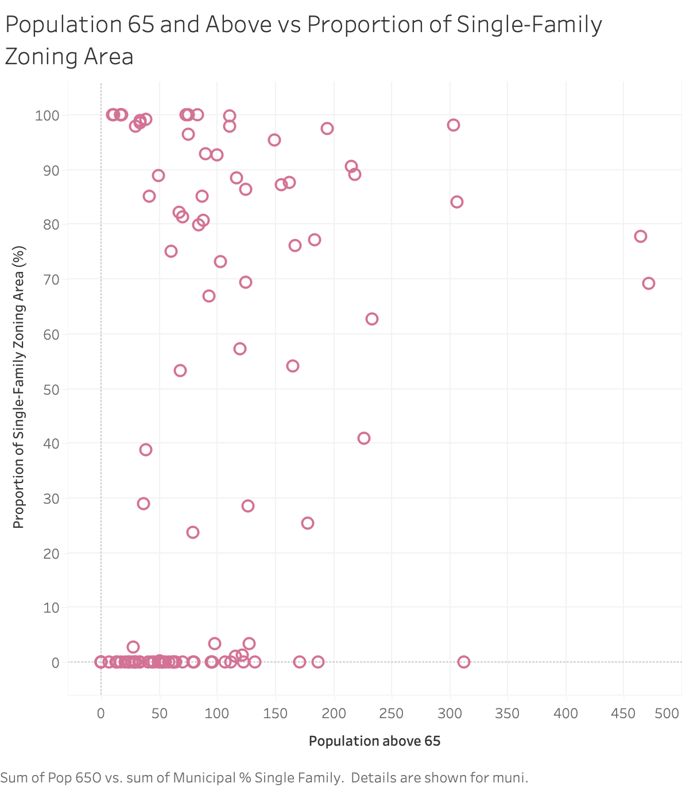
Summary
In this exploratory analysis, I focused on three questions centered on zoning. I began with overall analysis and visualization to familarize myself with and sanity-check the data. This step was crucial, because there were many findings that went against my assumption. One of the biggest one was regarding population. I initially thought that population referred to the overall municipality population and was very confused as to what the unit of measurement was. However, after visualizing, viewing the table, and digging into the U.S. Census Report, I understood that it was because the data only incorporated housing areas. Although that was explicitly stated in the metadata, it required multiple visualizations for me to internalize. After inspecting important features, I proceeded into the next phase of answering my questions. I used geographical visualizations, box plots, and scatter plots to identify any relationship between zoning and geographical area, income, and municipal demographics. I did not see any clear geographical or demographic patterns, but there might be an underlying/confounding factor that needs further exploration. Similarly, the box plot suggested that higher-income majority municipalities had stricter zoning laws, but this could be due to those income groups having more data points. One of the biggest challenges I faced through this analysis was that I did not have data on the zoning areas because of the corrupt geojson file (as reported on Slack). Because of this, I wasn't sure if the population was small because the housing area was small or if there was a low density of people. Thus, my next steps would be to retrieve this data and use it to normalize the data. Overall, I was able to dig deep into the data using Tableau and Python Pandas for data-quality validation, and I learned many skills like creating a calculated field to generate visualizations to answer my question.